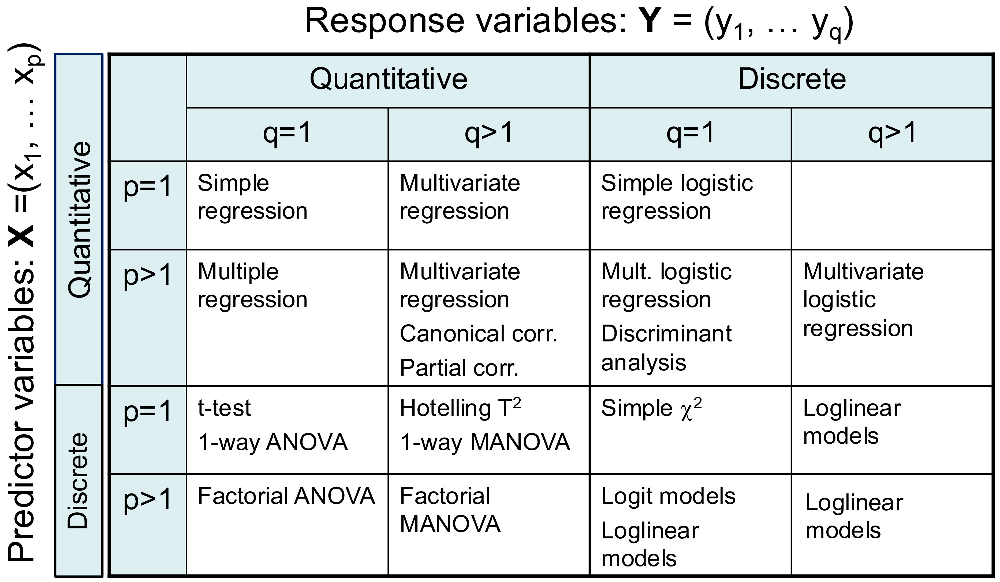

Show the code
fit <- lm(cbind(mpg, qsec) ~ hp + wt, data = mtcars)
class(fit)[1] "mlm" "lm" lm() Methods to "mlm"lm() call as a univariate one, but many of the methods built around lm objects stop working, or quietly do something univariate. The underlying issue is that every object gains a dimension. This post describes what I’ve learned extending lm methods to mlm in the heplots, candisc, mvinfluence and genridge packages.
R makes it remarkably easy to fit a multivariate linear model. You don’t need a special function. You just give lm() a matrix of responses instead of a single one:
fit <- lm(cbind(mpg, qsec) ~ hp + wt, data = mtcars)
class(fit)[1] "mlm" "lm" The result is an object of class "mlm" that also inherits from "lm". That second class is a promise, or at least a hope: anything that works for a linear model should work here too. So, as you would for any regression, you ask for the diagnostic plots:
plot(fit)Error:
! 'plot.mlm' is not implemented yetWell, that’s honest, at least. Other functions fail less gracefully. Several old friends from the car package stop with messages that tell you nothing about why:
car::avPlots(fit)Error in `complete.cases()`:
! not all arguments have the same lengthcar::vif(fit)Error in `if (names(coefficients(mod)[1]) == "(Intercept)") ...`:
! argument is of length zeroThe more interesting cases are the ones that don’t fail. cooks.distance() runs without a murmur and gives you a Cook’s D for each case, separately for each response:
head(cooks.distance(fit), 4) mpg qsec
Mazda RX4 1.589652e-02 0.0454756076
Mazda RX4 Wag 5.464779e-03 0.0280809974
Datsun 710 2.070651e-02 0.0003741428
Hornet 4 Drive 4.724822e-05 0.0051368087That’s two univariate answers to what was a multivariate question: which cases have an undue influence on the model as a whole? summary(fit) does the same thing, returning a list of separate regression summaries, one per response, as if you’d called lm() twice. Nothing warns you that the correlation between the responses, which is the whole point of fitting them together, has dropped out of the analysis.
In short, the multivariate linear model is easy to fit and hard to see. Figure 1 puts this in a wider frame. It classifies the familiar linear-model methods by the number and kind of predictors and responses. For one response (\(q = 1\)), we have a rich toolkit of graphical methods: added-variable plots, influence plots, effect plots and the rest. For several quantitative responses (\(q > 1\)), the methods are just as well developed on the statistical side (multivariate regression, MANOVA, canonical correlation), but the graphics have been thin. Mostly, the results arrive as tables of multivariate test statistics.

1. Columns: responses, quantitative or discrete, with q = 1 or q > 1. For quantitative responses, simple and multiple regression, t-test and ANOVA (q = 1) generalize to multivariate regression, canonical and partial correlation, Hotelling T-squared and MANOVA (q > 1). For discrete responses, logistic regression, chi-square, discriminant analysis, logit and loglinear models.">Why should this be so hard? The statistics of the multivariate linear model have been settled for more than half a century. The trouble is more mundane, and I think it’s worth naming, because it explains nearly every problem I’ve run into.
When the response goes from a vector y to a matrix Y, every object the model produces gains a dimension:
Figure 2 shows this ladder for a model with \(p = 3\) coefficients and \(q = 2\) responses.

lm to mlm, every object gains a dimension. Blue cells are what a univariate model gives you; orange cells are added by the second response. The residual for a case becomes a vector, the coefficient vector becomes a matrix, and the table of confidence intervals becomes a 3-way array.
That extra dimension shows up first in what a function returns, and then in every method that has to consume it: print(), summary(), confint(), predict(), and of course plot(). Code written for one shape is handed the next one up, and it has to do something.
Base R takes several different approaches. Sometimes it simply returns the bigger object: coef(fit) is the \(3 \times 2\) matrix you’d expect. Sometimes it flattens the extra dimension away. confint() strings the responses and coefficients together into one long list of intervals:
confint(fit) 2.5 % 97.5 %
mpg:(Intercept) 33.95738245 40.49715778
mpg:hp -0.05024078 -0.01330512
mpg:wt -5.17191604 -2.58374544
qsec:(Intercept) 17.45146289 20.19970760
qsec:hp -0.03507046 -0.01954879
qsec:wt 0.39771199 1.48535274The broom package does much the same thing in tidy form, stacking the responses in a long data frame with a response column. That’s perfectly convenient for a table, but in both cases the answers for mpg and qsec sit side by side as if they had nothing to do with each other.
And sometimes R just refuses:
predict(fit, newdata = mtcars[1:2, ], se.fit = TRUE)Error in `predict.mlm()`:
! the 'se.fit' argument is not yet implemented for "mlm" objectsI have some sympathy for that last one. For a univariate model, the standard error of a predicted value is a single number, and a confidence interval is a pair of numbers, lwr and upr. For an mlm, the uncertainty of each predicted point is a \(q \times q\) covariance matrix, and the natural confidence region is an ellipse (an ellipsoid when \(q > 2\)) around it. What should predict() return? How should it print? There’s no column in cbind(fit, lwr, upr) for an ellipse.
So here’s the argument of this post, in a nutshell:
A good multivariate extension isn’t just “run the univariate method \(q\) times”. It has to decide what to do with the extra dimension: find the matrix that plays the role of the scalar, and then find a way to see it. Most often, as it turns out, that way is an ellipse.
Over the past twenty years or so I’ve been filling these gaps, one package at a time, often with John Fox and Georges Monette:
heplots::robmlm() fits a robust version, downweighting cases with large residuals.Each one is a case of the same problem: deciding what the extra dimension means, for the statistics and for the software. The sections below take them in turn.